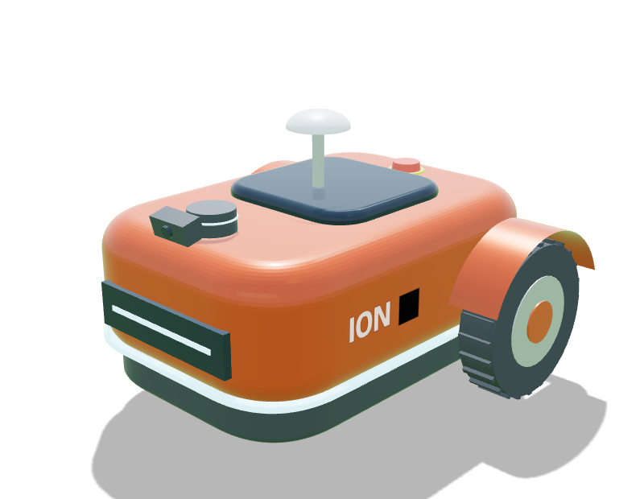

Ion
All-rounderThe one we're building first.
Building firstTwo-wheel differential, 1 caster
- Cut36 cm
- Top speed0.50 m/s
- Peak rate648 m²/h
- Range500 m²
- Climb15°
- Agility115 cm turn
- Sight47 cm blind
- Cost≈ $2.2k
Special Factory body: a certified blade guard, battery and dock, so it can be built first.
Weakness A 36 cm cut: big lawns take a long time.
✔ Smoke test passed · 99.1%Full specs →